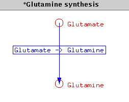
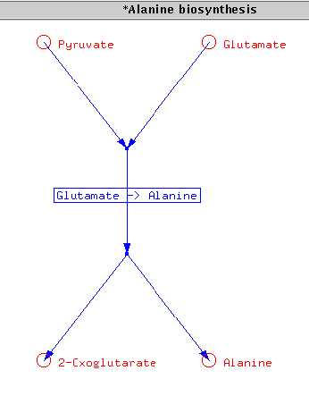
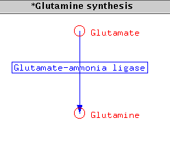
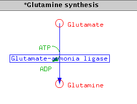
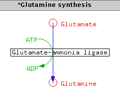

Note This is incomplete and applies to a prerelease version 4 of xace.
The software behind the Metabolic Pathway display is fairly complicated, because the task of laying out the nodes (corresponding to Metabolites) and arcs (Pathways/Reactions) is computationally quite demanding. Given that, the number of magic tags is surprisingly low.
The following discussion will be in terms of nodes and arcs, because that is what it's all about. It can be useful to keep in mind that Pathway in the models necessary for this display stand for both Pathway in the sense of the whole set of reactions leading from a Reactant to a Product, and for the individual reactions.
?Pathway Structure Components ?Pathway XREF In_Pathway In_Pathway ?Pathway XREF Components Diagram UNIQUE ?PathwayDiagram XREF Pathway Enzyme ?Enzyme XREF Catalyzes Metabolites Major_Reactant ?Metabolite XREF Consumed_by Minor_Reactant ?Metabolite XREF Consumed_by Major_Product ?Metabolite XREF Produced_by Minor_Product ?Metabolite XREF Produced_by Cofactor_Reactant ?Metabolite XREF Consumed_by Cofactor_Product ?Metabolite XREF Produced_by Additional_Cofactor_Reactant ?Metabolite XREF Consumed_by Additional_Cofactor_Product ?Metabolite XREF Produced_by ?Enzyme Catalyzes ?Pathway ?Metabolite Consumed_by ?Pathway Produced_by ?Pathway ?PathwayDiagram Name ?Text Pathway ?Pathway Node Int Float Float Int ?Metabolite // ID X Y LabelID Metabolite Arc Int Int Int Int Int Float ?Pathway // ID Label From To Curvature Radius Step TangentArc Int Int // Arc Tangent Label Int Float Float Text // ID X Y Label
A minimal set of objects and data values is the following:
Pathway : "*Glutamine synthesis" Components "Glutamate -> Glutamine" Pathway : "Glutamate -> Glutamine" Major_Reactant Glutamate Major_Product GlutamineLoading this data set and clicking on the Pathway object "*Glutamine synthesis" will open the following window:

Thus you need a "wrapper" Pathway for the reaction. The reaction itself needs to have at least one Major_Reactant and one Major_Product. In fact, only Pathways with Components will be displayed as a graphic, and only the Components that have Major_Reactant and Major_Product will be included in the graphic. You will get a warning about Pathways that cannot be drawn because they have no Major_Reactant and Major_Product. (This can actually cause you to get an empty graphic ...)
If you have more than one of either Major_Reactant or Major_Product you will get the expected forks: the dataset
Pathway : "*Alanine biosynthesis" Components "Glutamate -> Alanine" Pathway : "Glutamate -> Alanine" Major_Reactant "Glutamate" Major_Reactant "Pyruvate" Major_Product "Alanine" Major_Product "2-Oxoglutarate"gives this display:

Pathway : "*Glutamine synthesis" Components "Glutamate -> Glutamine" Pathway : "Glutamate -> Glutamine" Enzyme "Glutamate ammonia-ligase" Major_Reactant Glutamate Major_Product Glutaminegives

Pathway : "*Glutamine synthesis" Components "Glutamate -> Glutamine" Pathway : "Glutamate -> Glutamine" Enzyme "Glutamate ammonia-ligase" Major_Reactant Glutamate Major_Product Glutamine Cofactor_Reactant ATP Cofactor_Product ADPproduces the following:

The menu choice Recompute will put everything back to their computed positions.
If you have changed the layout of a graph and close it, you will get a question if you want to save the it. If you answer yes, the program will create a ?PathwayDiagram object.
Node Int Float Float Int ?Metabolite // ID X Y LabelID Metabolite
Arc Int Int Int Int Int Float ?Pathway // ID Label From To Curvature Radius Step
TangentArc Int Int // Arc Tangent
Label Int Float Float Text // ID X Y Label

(which is essentially the same as the one above, but with the tangent arc a bit larger and the label for the arc moved.)
// data dumped from tree display - and edited for legibility PathwayDiagram : "*Glutamine synthesis Diagram Info" Pathway "*Glutamine synthesis" !! !!Node ID x-coord y-coord LabelID Metabolite !! Node 9 31.418339 14.081660 10 "ADP" Node 7 31.418339 6.918340 8 "ATP" Node 3 35.000000 18.000000 4 "Glutamine" Node 1 35.000000 3.000000 2 "Glutamate" !! !!Arc ID LabelID FromNode ToNode Curvature Radius Pathway !! Arc 11 -1 7 9 -1 3.581660 Arc 5 6 1 3 0 7.500000 "Glutamate -> Glutamine" !! !! Tangent ArcID TangentArcID !! TangentArc 5 11 !! !! Label LabelID x-coord y-coord LabelText !! Label 10 28.418339 13.758583 "ADP" Label 8 28.268337 6.595263 "ATP" Label 6 24.449997 9.514424 "Glutamate-ammonia ligase" Label 4 37.000000 17.500000 "Glutamine" Label 2 37.000000 2.500000 "Glutamate"